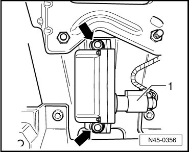

Lateral Accelerometer: Service and Repair
Electronic Stabilization Program Sensor Unit
The transverse acceleration sensor (G200), rotation rate sensor (G202) and longitudinal acceleration sensor (G251) are installed in a housing under the center console.
After replacing the Electronic Stabilization Program (ESP) sensor unit (G419), transverse acceleration sensor (G200) and longitudinal acceleration sensor (G251) basic setting must take place.
CAUTION!
Strong vibrations can destroy the transverse acceleration sensor (G200), rotation rate sensor (G202) and longitudinal acceleration sensor (G251).
Removing
- Remove center console.
- Remove the airbag control module and lay aside slightly toward front.
- Disconnect connector - 1 - from ESP sensor unit (G419).

- Remove the two nuts - arrows -.
- Remove ESP sensor unit (G419).
Installing
- Installation is performed in the reverse order of removal.
When installing ESP sensor unit, be sure it is properly seated on the bracket and free of tension.
Never force ESP sensor unit into position using nuts.
- Tighten the nuts to 8 Nm.
- Perform transverse acceleration sensor (G200) and longitudinal acceleration sensor (G251) basic setting.
(VAS 5051), connecting and selecting functions --> [ VAS 5051, Connecting and Selecting Functions ] Scan Tool Testing and Procedures.